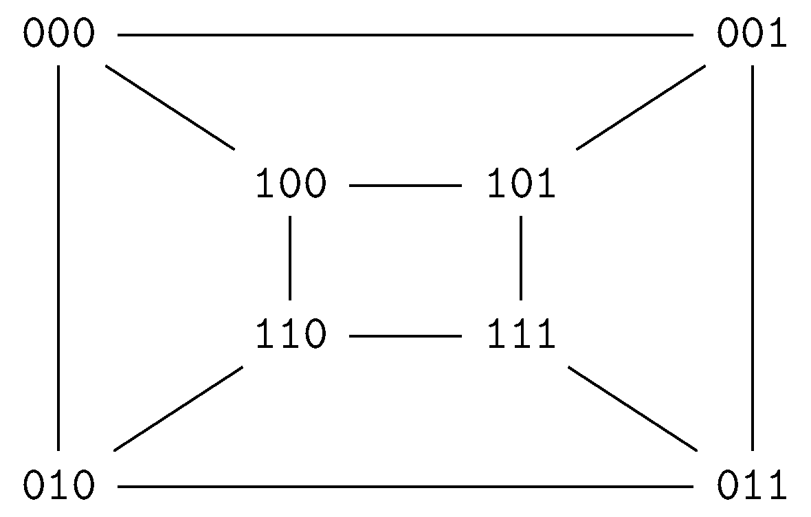
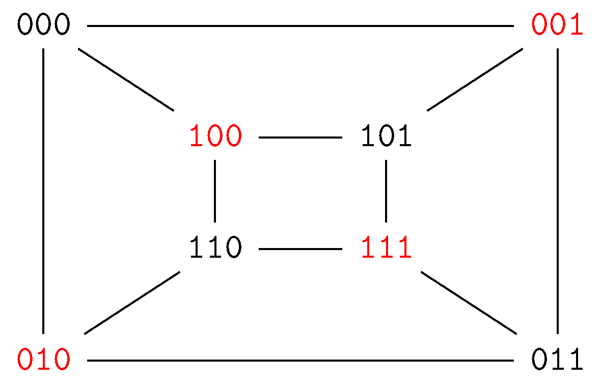
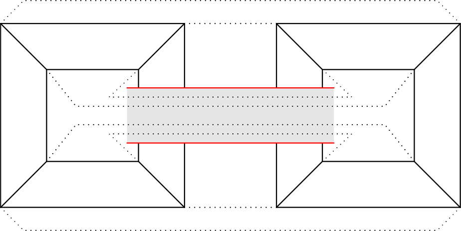

January 28th
Today I learned that the genus of the $n^\text{th}$ hypercube graph $Q_n$ is $(n-4)2^{n-3}+1$ for $n\ge2$ from here . Quickly, the graph is $Q_n$ as\[K_2\times K_2\times\cdots\times K_2,\]where $\times$ is denoting the Cartesian product of graphs. We remark that assigning a bit to each of the $K_2$ lets us label the vertices of $Q_n$ with binary strings so that two vertices are adjacent if and only if they differ in exactly one bit. Here's $Q_3,$ the cube.
We prove the genus bound by lower-bounding with the Euler characteristic and upper-bounding by actually embedding $Q_n$ in a surface of the required genus. We begin with the lower bound. The definition of $Q_n$ quickly implies $V=2^n,$ and the handshake lemma implies $2E=nV$ because (with the binary representation) each vertex is adjacent to $n$ others, so $E=n2^{n-1}.$
Continuing, each face—in any representation—has degree at least $4,$ not $3$ because the graph is bipartite. Indeed, here's a coloring to show $Q_3$ is bipartite.
In general, a vertex is colored red if and only if its bit sum is odd: because adjacent vertices differ in exactly one bit, this will always flip the parity of the bit sum. Anyways, it follows that the sum of the degree of the faces is at least $4F,$ so the handshake lemma implies $F\le2E/4=n2^{n-2}.$
Plugging into the Euler characteristic formula, we see that\[2-2g=V-E+F\le2^n-n2^{n-1}+n2^{n-2}.\]The right-hand side is $(4-n)2^{n-2},$ and rearranging says $g\ge(n-4)2^{n-3}+1.$ In particular by this point we know that $Q_n$ is not planar for $n\ge4.$
We now prove the upper-bound to finish the proof. Let $g_n=(n-4)2^{n-3}+1$ so that we want to embed each $Q_n$ into a surface of $g_n.$ We do this inductively; note that the square $Q_2$ embeds into the plane of genus $g_2=0,$ which is our base case. So suppose we can embed $Q_n$ so that we want to embed $Q_{n+1}.$ Well, $Q_{n+1}$ is just two copies of $Q_n$ with edges between copied vertices, so we should probably spend $2g_n$ bridges embedding the $Q_n.$ This leaves\[g_{n+1}-2g_n=(n-3)2^{n-2}+1-(n-4)2^{n-2}-2=2^{n-2}-1\]bridges left over to place. We remark that we currently have the $Q_n$ on separate surfaces (effectively different components), which more or less gives us a bridge to spend for free: this bridge will just connect the components. So we have $2^{n-2}$ bridges to go around.
Before continuing, we motivate this discussion with the following embedding $Q_4$ into a torus.
Here, the right $Q_3$ is "mirrored'' with respect to the left one, and the connecting edges between them are dotted. The hole in our surface is the bridge connecting the two inner squares.
We bring up this example to motivate the idea of placing bridges between faces in each copy of $Q_n$ in order to give the necessary edges a bridge. However, some care is required: we expect there to be a full $n2^{n-2}$ faces while we have only $2^{n-2}$ bridges, so we need to select the faces we puncture somewhat carefully. Namely, only $\frac1n$ of the faces are going to get a bridge. But this is fine! Each vertex has degree $n,$ so we expect to only need approximately $\frac1n$ of the faces to have a bridge to account for each vertex's needed edges.
It remains to actually name these faces, for which a technical trick is required. We would like all of our faces to be quadrilaterals (as in the Euler characteristic lower bound), so we need to select $2^{n-2}$ quadrilaterals from our $2^n$ vertices. (No vertex should be chosen twice because the above analysis is sharp.) Well, one way to do this is to just hope that the vertices labeled\[\texttt{[bitstring]00},\quad\texttt{[bitstring]01},\quad\texttt{[bitstring]10},\quad\texttt{[bitstring]11}\]all lie on one face. Indeed, the bit string will have $n-2$ bits, so this does give $2^{n-2}$ faces, and each vertex is included in one of these faces exactly once. Call these quadrilaterals "nibble quadrilaterals.''
However, to make this proof work, we must alter our induction. We actually prove that it is possible to embed $Q_n$ into a surface of genus $g_n$ for which the nibble quadrilaterals are actually faces. Again, $Q_2$ is our base case. Our inductive step for $Q_{n+1}$ still begins by placing our two copies of $Q_n$ onto two surfaces, which leaves us with the $2^{n-2}$ bridges left to place from before.
We have done the necessary work to finish the proof now. Call one copy of $Q_n$ the $\texttt{0}$ copy and the other copy the $\texttt{1}$ to denote the prefix. Now connect each of the $2^{n-2}$ nibble face in the $\texttt{0}$ copy to the corresponding nibble face in the $\texttt{1}$ face by one of our $2^{n-2}$ bridges. Thus, each $\texttt{0}v\in Q_n$ lives on some nibble face, and the bridge allows an edge from $\texttt{0}v$ to $\texttt{1}v.$ (All edges can fit onto the bridge by flipping the $\texttt{1}$ copy as in the $Q_4$ embedding.) This completes the embedding of $Q_{n+1}.$